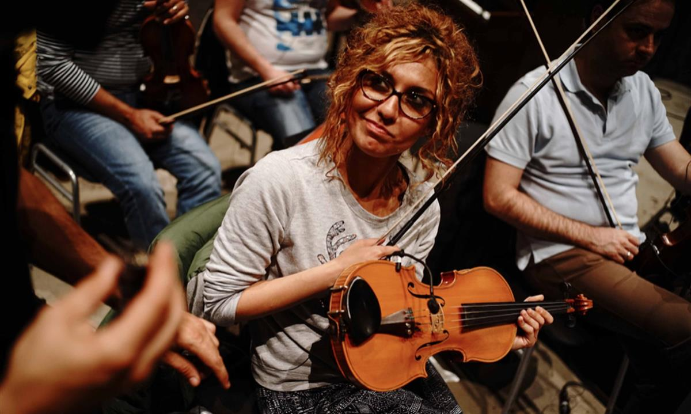

The Orchestra of Syrian Musicians: ‘When there is violence, you have to make music'
With war ravaging their homeland, the Orchestra of Syrian Musicians has been scattered across the globe. But five years since the violence erupted, the group are reuniting for a cathartic tour – and opening Glastonbury
Five years ago, the 90-strong Syrian National Orchestra for Arabic Music drew stars from Plácido Domingo to Gorillaz to perform with them at their home in Damascus Opera House. Today, with the bitter civil war still raging, its musicians are scattered across the globe. Some former performers of the prestigious orchestra and the choirs that accompany it are refugees in the Middle East, Europe and the US, while others are still struggling to live and perform in the conflict-torn country.
“Music, these days, is like a painkiller,” says Raneem Barakat, a singer in the orchestra’s choir. The 24-year-old regularly braves bombs and snipers on the roads on her two-hour journey to Damascus to study and perform. “You have to take the risk. When I sing it hypnotises me; I leave reality.”
For the first time since the war began, former and present members of the SNOAM have been reunited by Damon Albarn’s music collective, Africa Express. Alongside guest stars such as Paul Weller and Bassekou Kouyaté, they will play a series of concerts across Europe, opening the Glastonbury festival and performing on 25 June at the Southbank Centre at a concert which will be also be live-streamed around the world, including in Syria and the Zataari refugee camp in Jordan.
It’s an ambitious project, and when I arrive in Amsterdam to watch the first day of rehearsals it’s already hit a problem; the violin bows are moving in perfect unison, but the conductor is missing. Issam Rafea, who led the orchestra in Syria, and with Damon Albarn came up with the reunion idea, cannot leave the US, where he is applying for refugee status.
His predicament typifies the logistical problems the organisers have faced. Trying to get visas for 50 Syrian musicians almost sunk the project before it began; just a week before rehearsals were due to start, it still wasn’t clear they could get the Schengen visas needed to book the performers’ flights. Africa Express co-founder Ian Birrell tells me they have hired a Boeing 737 to transport all the musicians and I hear dark rumours about desperate calls to British officials.
But Rafea’s absence also highlights the emotional temperature of the performances. The conductor’s brother is one of the orchestral musicians and his sisters sing in the choir; this was their first chance to see their sibling since he left Syria in 2013.
Open on original site ↗Albarn’s own relationship with Syria began eight years ago when he was introduced to Eslam Jawaad, a Syrian Lebanese rapper who had worked with Wu-Tang Clan. The pair hit it off: Jawaad performed for the track Mr Whippyon Albarn’s concept album the Good, the Bad and the Queen, then toured with Gorillaz – and finally took Albarn to visit Syria.
He fell in love with the country overnight. “It blew me away,” Albarn tells me, enthusing about everything from a drunken meeting with a Bedouin Sheik (“I’d had a lot of arak”) to motorbiking around the Acropolis in Palmyra in the moonlight. “Young people would start their evening in Damascus, go to Beirut for the night and then come back to Damascus to chill out,” he says. “The call to prayer when you are on the top of the mountain in the early morning in Damascus just leaves you speechless.”
While there, Albarn met Rafea the conductor and recorded with the Syrian National Orchestra for the Gorillaz album Plastic Beach. A year later in 2010, Gorillaz, along with guest stars including Bobby Womack and Mick Jones, joined the orchestra for a concert in the 1,000-year-old Damascus citadel. When Albarn’s group toured Europe, members of the orchestra – including Rafea – went with them.
The burgeoning relationship ended abruptly with the uprisings of 2011. As the conflict has taken hold, Albarn says he has watched with horror the way Syrian refugees have been cast as a “homogenous shadow from the Middle East moving slowly towards us”. “I just felt: ‘What can I do?” And so he decided to get the Syrian National Orchestra back together, “Blues Brothers style”.
“I want people who see these concerts to experience the humanity of this homogenous shadow which they feel so threatened by.” he says.
He links the attitude towards refugees with the rise of the right, pointing to the way that Brexit campaigners have sought to exploit the crises. (“Honestly, hand on heart, I will consider leaving the country if we leave,” he says). But he has tears in his eyes as he talks about how much Syrians have lost and his hope that the concerts will show people how important it is to support them.
Musicians from the Syrian National Orchestra rehearse in Amsterdam, June 2016. Photograph: Ayman Oghanna
As rehearsals begin, Albarn wanders around joking with musicians - at one point rushing out to rustle up baklava, dates and tea. And, while he seems relaxed, he is mentally marking the pieces that work, and where he and other collaborators - from Tunisian singer Mounir Troudi to Mauritanian singer and harpist Noura Mint Seymali - will fit in to the live show.
Alongside a string section (violins and double bass) there are more classical Arab instruments: the ney, a flute, a qanun, a zither. For the performers themselves, listening to the energetic rhythms and voices from their homeland is particularly affecting. Oud player Maher Mahmood tells me how touching it is to be once more with his colleagues and friends from the orchestra. The 30-year old fled the country in 2012, to avoid conscription, but did not escape all the violence.
“Everyone will tell you of moments where there was an explosion in front of you and you are lucky to be alive; this happened to me twice,” he says. “But the worst thing was seeing Syrians dying in the street.”
Other musicians have endured kidnappings, or being hit by shrapnel, he says, and everyone has lost family members and friends. But living as a refugee brings its own challenges. “The worst thing for me was leaving my parents, brothers and friends. I had a good job, a good life. It was a challenge to learn to live without everything; a human being is not just a person, we are our connections too,” says Mahmood.
After struggling to earn enough money with his music in Jordan, Mahmood was invited to perform in Denmark. He claimed asylum there, but then had to spend five months in a refugee centre, waiting to hear if his claim would be approved.
“Music helped me not to go crazy,” he says. “Even in the centre I would practise for hours. My teacher and I would sit on Skype, playing to each together, discussing technical points and new things.”
Twenty-five-year-old Munir Bu Kolthoum, a Sufi-inspired hip-hop artist - and graphic designer - echoes Mahmood’s words. A guest star for the tour, Kolthoum left Syria for Jordan after suffering from post-traumatic stress disorder.
“I started losing my mind,” he says. “I had to get away. They blew up eight tonnes of TNT close to where I live; if it wasn’t for a red traffic light, I would have been dead.
“They shot at my university bus. Another friend got her head blown off. Some of my friends were kidnapped, ‘disappeared’; we still don’t know what happened to them.”
Unwilling to take medication for his panic attacks and hallucinations, and unable to afford counselling in Jordan, Kolthoum says “music was my only therapy”. He has told his stories through his music which has brought him a wider audience among displaced Syrians around the world. “Half my fan base are refugees now,” he says. “I am mad proud of my people. They are surviving all these odds and proving how talented and brave they are.
Watching the rehearsals in a baseball cap and a baggy shirt, Kolthoum says he is thrilled to be performing with the orchestra. “As kids they were our musical heroes.
“The media tries to show us as savages. As terrorists. But there are different sides to every country in the world; there is the musician and the graphic designer and the coffee-shop worker. We need to show the normal side.”

Violinist Sousan Eskandar at rehearsals in Amsterdam, June 2016. Photograph: Ayman Oghanna
As the musicians begin a soaring western-influenced piece they move in perfect rhythm. But politically the orchestra is divided, with some performers supportive of Bashar Al Assad’s regime and the stability and prosperity they say it once provided. Others who have fled the country are opposed to it. How can they play together?
Violinist Sousan Eskandar, who now lives in Germany, is adamant they will make it work. “It doesn’t matter if we all have different opinions, we have to find a way to bring them together. Maybe you make good points, maybe I do; [but] we can become one.
“When there is violence in the world, you have to make more beautiful music, and make it more intensely.”
The Syrian National Orchestra perform Raqa Onsi by Abo Khalil Qabbani, arranged by: Issam Rafea, and Mahboubi Qasad Nakadi by Abo Khalil Qabbani arranged by Issam Rafea
As the rehearsals come to a close with a rousing love song to Damascus the choir take celebratory selfies and start to dance. For Mahmood, it is a homecoming, of sorts.
“When you hear [the orchestra’s] big sound again it is strange and touching,” he says. “It takes you back to Damascus, to our memories of this sound … in some moments, as we were playing, I could smell Damascus.”
SOURCE: THE GUARDIAN